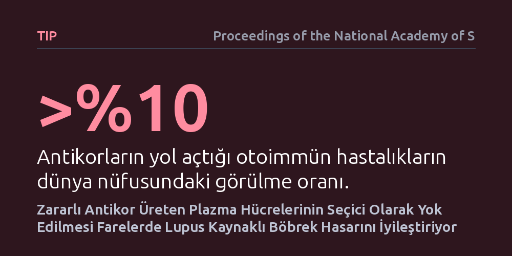

TIP · Proceedings of the National Academy of Sciences · 2026-10-08
Araştırmacılar, lupus hastalığında tüm bağışıklığı baskılamak yerine yalnızca vücudun kendi DNA'sına saldıran plazma hücrelerini seçici olarak hedef almayı denedi. Fare modelinde uygulanan bu yöntem, genel bağışıklığı korurken böbrek iltihabını ve doku hasarını belirgin şekilde geriletti.
Otoimmün hastalıklarda tüm savunma sistemini felç eden ağır tedaviler yerine, yalnızca doku hasarına yol açan hücreleri nokta atışıyla ortadan kaldırmanın mümkün olabileceğini gösteriyor.

Bağışıklık sistemimiz normal şartlarda vücudu virüslere ve bakterilere karşı korumakla görevlidir. Ancak otoimmün hastalıklarda bu savunma mekanizması şaşırarak vücudun kendi sağlıklı dokularını yabancı bir tehdit gibi algılamaya başlar. Sistemik lupus eritematozus (SLE), bu karmaşanın en belirgin örneklerinden biridir ve özellikle böbrekleri hedef aldığında (lupus nefriti) hayati organ yetmezliğine kadar uzanabilen ağır hasarlara yol açar. Hastalığın temel tetikleyicisi, hücre çekirdeğindeki genetik materyale, yani çift sarmallı DNA'ya (dsDNA) bağlanan zararlı otoantikorlardır.
Bu otoantikorları fabrikasyon biçimde durmaksızın üreten yapılar ise plazma hücreleridir. Plazma hücreleri, bir kez olgunlaştıktan sonra kemik iliği ve dalak gibi organlara yerleşerek yıllarca hayatta kalabilir ve klasik bağışıklık baskılayıcı ilaçlara karşı oldukça dirençlidir. Mevcut tedaviler bu hücreleri ortadan kaldırmak istediğinde genellikle geniş çaplı bir baskılama yoluna gider; ancak bu durum vücudun enfeksiyonlara karşı geliştirdiği tüm savunma kalkanını da yok eder. Yazarların makalede vurguladığı gibi, antikor kaynaklı hastalıklar "insan nüfusunun yüzde 10'undan fazlasını etkilemektedir" ve hastaları savunmasız bırakmadan yalnızca zararlı hücreleri susturacak hassas yöntemlere ihtiyaç duyulmaktadır.
Araştırmacılar, bağışıklık sistemini toptan çökertmek yerine çok daha cerrahi bir yaklaşımı test etti: Yalnızca dsDNA'ya bağlanan otoantikorları üreten plazma hücrelerini seçici olarak hedef alıp yok etmek. Bu amaçla, insan lupus hastalığının genetik ve klinik seyrini başarıyla taklit eden NZB/W F1 fare modelleri kullanıldı. Bu fareler, yaşları ilerledikçe kendiliğinden yüksek düzeyde anti-dsDNA antikorları üretmekte ve ölümcül böbrek iltihabı geliştirmektedir.
Deney kurgusunda, farelerin bağışıklık belleğine toptan müdahale edilmedi. Bunun yerine, salgıladıkları antikorun hedefine (dsDNA) özgü bir moleküler stratejiyle yalnızca zararlı antikor fabrikası olan plazma hücreleri işaretlenerek ortadan kaldırıldı (ablasyon). Çalışma süresince farelerin idrarındaki protein kaçağı, kandaki spesifik otoantikor seviyeleri ve böbrek dokusundaki iltihabi hasar düzenli aralıklarla takip edilerek kontrol grubuyla kıyaslandı.
Elde edilen sonuçlar, seçici ablasyon stratejisinin lupus nefritinin ilerleyişini belirgin şekilde durdurduğunu ve mevcut hasarı gerilettiğini gösterdi. Tedavi edilen NZB/W farelerinde dolaşımdaki anti-dsDNA antikor düzeyleri hızla düşerken, böbrek glomerüllerinde biriken ve dokuyu tahrip eden bağışıklık komplekslerinin yoğunluğu azaldı. Bunun doğrudan bir sonucu olarak, böbrek fonksiyonlarının en kritik göstergesi olan idrarda protein kaybı (proteinüri) geriledi ve farelerin yaşam süresi uzadı.
Daha da önemlisi, bu iyileşme sağlanırken farenin genel bağışıklık hafızası sağlam kaldı. Genel plazma hücresi havuzu ve vücudu daha önce geçirilmiş enfeksiyonlara karşı koruyan antikorlar varlığını sürdürdü. Yani fareler, lupusun yol açtığı böbrek tahribatından kurtulurken aynı zamanda ölümcül enfeksiyonlara karşı savunmasız bir bağışıklık yetmezliği tablosuna sürüklenmedi.
Bu bulgu, otoimmün hastalıklarda 'bütün ormanı yakmak' yerine yalnızca 'hastalıklı ağaçları kesmenin' biyolojik olarak mümkün olduğunu kanıtlaması açısından önemlidir. Plazma hücrelerinin salgıladıkları antikorun özgüllüğüne göre hedeflenebilmesi, sadece lupus nefriti için değil, antikorların başrolde olduğu diğer birçok kronik otoimmün hastalık için de hedefe yönelik yeni nesil tedavilerin önünü açabilir.
Bununla birlikte, çalışmanın henüz bir hayvan modeli deneyi olduğunu unutmamak gerekir. Fare bağışıklığı ile insan bağışıklığı arasında antikor çeşitliliği, doku mikroçevresi ve kemik iliğindeki plazma hücresi nişleri açısından önemli farklar bulunmaktadır. Bu yöntemin insanlarda güvenle uygulanabilmesi, hedeflenmeyen antikorlara zarar verilmediğinin ve uzun vadeli kalıcı remisyon sağlandığının klinik deneylerle gösterilmesine bağlıdır.